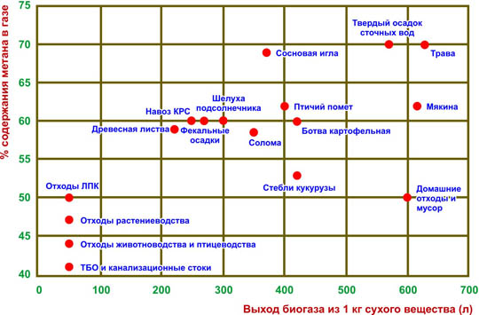

Сырье для производства биогаза

|
Биогаз представляет собой газ, получаемый в процессе метанового брожения биомассы. Разложение биомассы происходит под воздействием 3-х видов бактерий. В цепочке питания последующие бактерии питаются продуктами жизнедеятельности предыдущих. Первый вид — бактерии гидролизные, второй вид - это кислото-образующие бактерии, третий — метанообразующие. В производстве биогаза участвуют не только бактерии класса метаногенов, а все три вида.
Биогаз состоит из следующих элементов: 55%-75 % метана, 25 %-45 % CO2, незначительные примеси H2 и H2S. После очистки биогаза от СО2 получается биометан. Биометан полный аналог природного газа, отличаясь лишь происхождением.
В последние годы интерес бизнеса, науки и общественности к экологичным способам утилизации отходов возрос, равно как и интерес к альтернативным источникам энергии, обусловленный ростом цен на традиционные.
Сырьем для получения биогаза может служить широкий спектр органических отходов – твердые и жидкие отходы агропромышленного комплекса, сточные воды, твердые бытовые отходы, отходы лесопромышленного комплекса и др.
 Качество отходов характеризуется влажностью, выходом биогаза на единицу сухого вещества и содержанием метана в биогазе.Выход биогаза зависит от содержания сухого вещества и вида используемого сырья. Чтобы посчитать выход биогаза из конкретного сырья необходимо провести лабораторные испытания или посмотреть справочные данные и определить содержание жиров, белков и углеводов. При определении последних важно узнать процентное содержание быстроразлагаемых (фруктоза, сахар, сахароза, крахмал) и трудно разлагаемых веществ (например, целлюлоза, гемицеллюлоза, лигнин). Определив содержание элементов, считается выход газа для каждого по отдельности и затем суммируется. Среднестатистически из тонны навоза крупного рогатого скота получается 30-50 м? биогаза с содержанием метана 60 %, 150-500 м3 биогаза из различных видов растений с содержанием метана до 70 %. Максимальное количество биогаза — это 1300 м3 с содержанием метана до 87% можно получить из жира. Проще говоря, за сутки мы можем получить от одной коровы — 2,5 м3 биогаза, от быка на откорме — 1,6 м3, свиньи — 0,3 м3 и от птицы — 0,02 м3 биогаза. Современные технологии позволяют перерабатывать в биогаз любые виды органического сырья, однако наиболее эффективно использование биогазовых технологий для переработки отходов животноводческих и птицеводческих ферм, предприятий АПК и сточных вод, так как они характеризуются постоянством потока отходов во времени и простотой их сбора.
Принято считать, что изготавливается биогаз из навоза, хотя на практике видов сырья, пригодного для выработки биогаза, намного больше. Это может быть навоз (как плотный, так и жидкий), отходы производства пищевой промышленности, пищевые и кормовые остатки, барда, выжимки, биомусор из коммунальных служб и прочие органические отходы. Помимо отходов для производства биогаза могут быть использованы энергетические растения, которые могут быть выращены специально для этих целей.
Кроме отходов биогаз может производится из специально выращенных энергетических культур, например из силосной кукурузы или сильфия. Выход газа может достигать до 500 м3 с тонны.
В Европе практикуются так называемые энергетические севообороты, когда одна энергетическая культура сменяется другой, что позволяет собирать зеленую массу два раза в год, подавлять рост сорняков и значительно экономить средства предприятия. Также выращивают по две культуры на одном поле одновременно, например кукурузу и подсолнечник или кукурузу и просо, что позволяет увеличить содержание питательных веществ в силосе и стабилизировать урожайность в засушливые годы. Эти технологии вполне реально применять у нас — хозяйства будут всегда обеспечены качественным высококалорийным сырьем. Причем разные культуры могут в реакторе смешиваться: во многих случаях это дает даже более эффективные результаты, чем при использовании одного вида сырья.
Важно отметить, что установка по производству биогаза устроена таким образом, что за её пределы не проникнет ни характерное для перерабатываемых отходов зловоние, ни токсичные вещества, которые в других условиях загрязняют атмосферу и приводят к болезням. Получение биогаза из органических отходов – это не только собственный газовый источник. Переработка органических отходов в газ и удобрения с помощью наших биогазовых установок — это в первую очередь экологичный способ избавиться от опасного мусора и извлечь из него не вред, а пользу.
Экономически целесообразно строительство биогазовой установки исходя из наличия сырьевой базы для следующих видов предприятий:
1. Сельскохозяйственным предприятиям ( свинофермам, фермам КРС, птицефабрикам, растениеводческим предприятиям и др.)
2. Перерабатывающим предприятиям (спиртовым и биоэтанольным заводам, пивоваренным заводам, сахарным заводам, мясокомбинатам, ветеринарно-санитарным заводам, крахмалопаточным заводам, заводам по производству дрожжей, молокозаводам, хлебобулочным комбинатам, заводам по производству чипсов и переработке картофеля, производителям соков и консервов, виноделам, рыбным цехам)
3. Тепличным хозяйствам
4. Производителям биодизеля
5. Мусороперерабатывающим предприятиям
6. Коммунальным предприятиям городским очистным сооружениям |